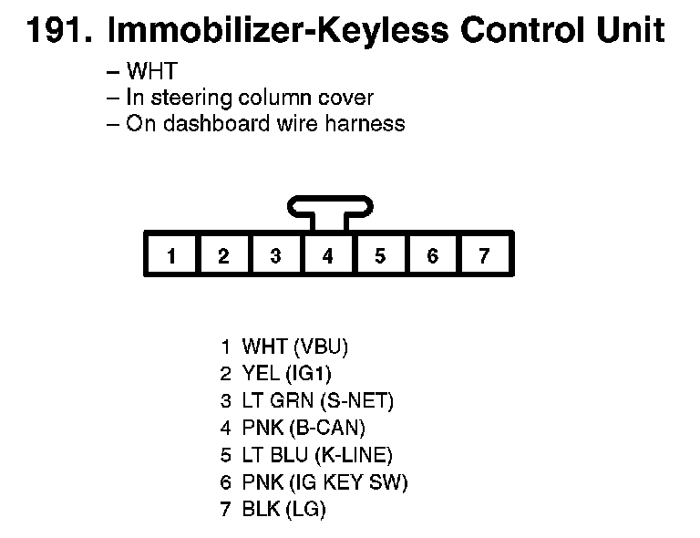
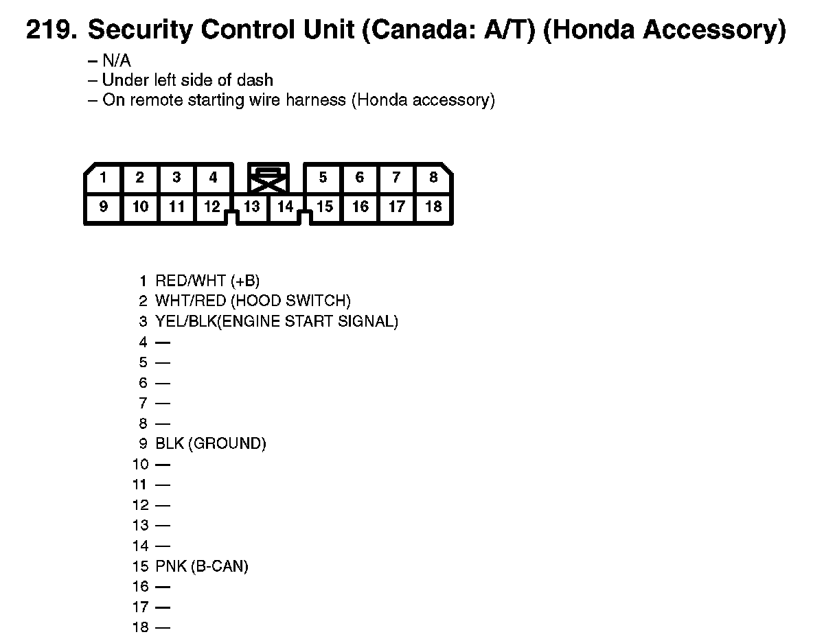

Operation CHARM
: Car repair manuals for everyone.
Home
>>
Honda
>>
2007
>>
Civic Si L4-2.0L
>>
Repair and Diagnosis
>>
Relays and Modules
>>
Relays and Modules - Accessories and Optional Equipment
>>
Alarm Module
>>
Diagrams
Alarm Module: Diagrams
191. Immobilizer-keyless Control Unit:

219. Security Control Unit (Canada: A/T) (Honda Accessory):
